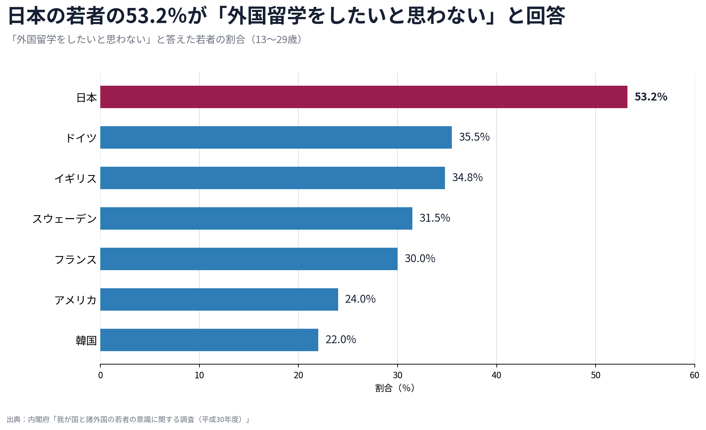
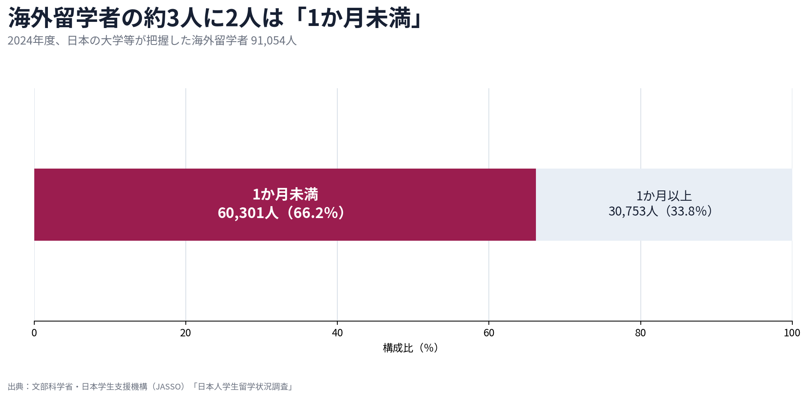
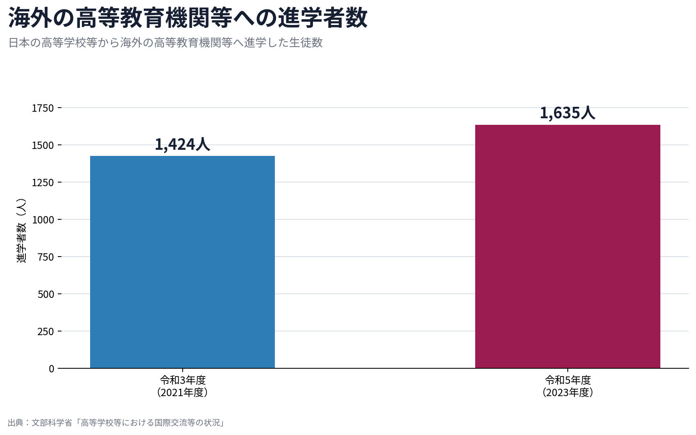
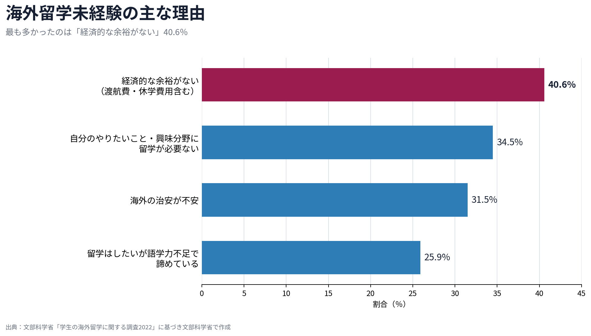
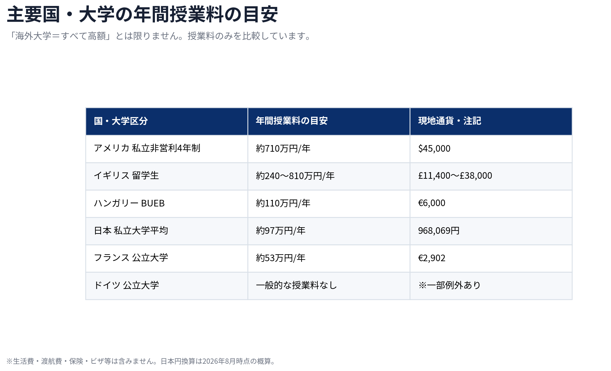
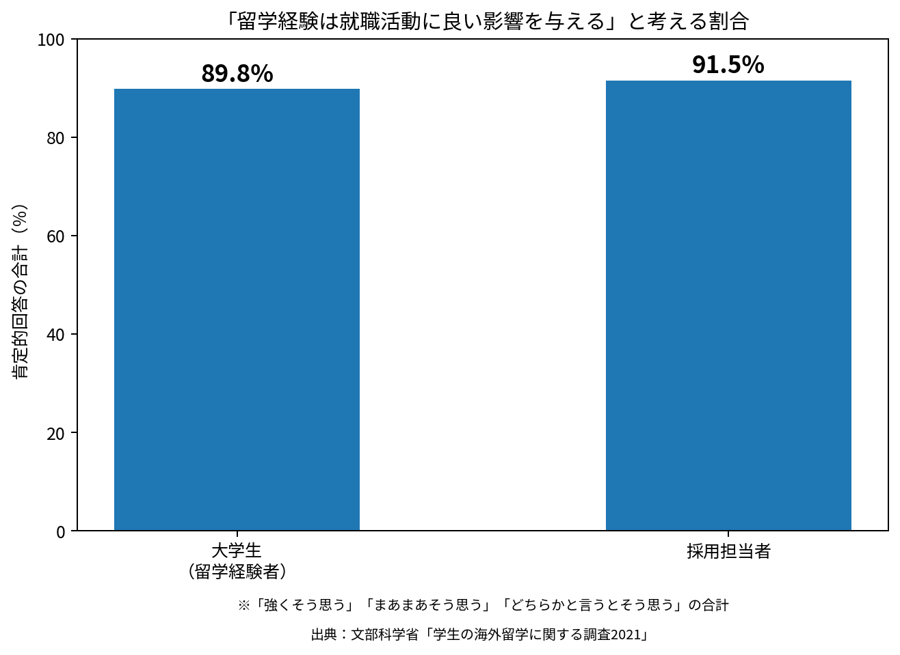
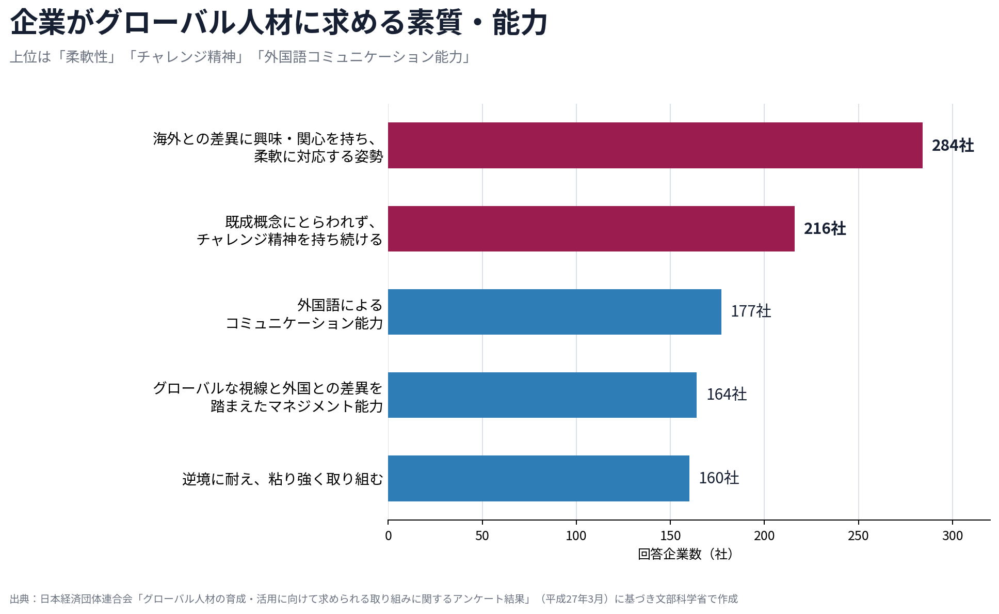

「海外の大学に進学する」
そう聞いたとき、みなさんはどんな人を思い浮かべるでしょうか。
英語がペラペラな人。
海外経験が豊富な人。
経済的にかなり余裕のある家庭の人。
「自分とは少し違う、特別な人が選ぶ進路」と感じる高校生もいるかもしれません。
また、保護者の方であれば、
- 「海外大学はどれくらいお金がかかるのだろう」
- 「英語で授業についていけるのだろうか」
- 「日本の大学へ行くのと比べて、就職活動にどう影響するのだろうか」
といった疑問や不安が先に浮かぶのではないでしょうか。
実際、日本の若者は他国と比較しても、海外留学を希望しない割合が高いというデータがあります。
しかし、本当に「日本の若者は海外に興味がない」だけなのでしょうか。
文部科学省の調査を見ると、少し違った事実が見えてきます。
海外留学に興味を持ったきっかけとして最も多かったのは、「海外生活や海外留学を経験した家族や友人など、身近な人の話を聞いたこと」でした。
海外進学を「自分にも関係のある選択肢」に変えるために必要なのは、大学や奨学金の情報だけではなく、実際にその道を歩んでいる人と出会うきっかけなのかもしれません。
日本の若者の53.2％が「外国留学をしたいと思わない」
まず、日本の若者が海外留学をどのように考えているのかを見てみましょう。
内閣府が日本、韓国、アメリカ、イギリス、ドイツ、フランス、スウェーデンなどの13〜29歳を対象に実施した国際比較調査では、日本の若者の53.2％が「外国留学をしたいと思わない」と回答しています。

他国の回答割合と比較すると、その差は歴然としています。
- 韓国：22.0％
- アメリカ：24.0％
- フランス：30.0％
- スウェーデン：31.5％
- イギリス：34.8％
- ドイツ：35.5％
また、「外国の高校や大学（大学院を含む）に進学して卒業したい」と答えた日本の若者はわずか5.1％でした。
この数値からも、日本の若者にとって「海外で学位を取る」という選択肢が、まだ一般的な進路として定着していないことが窺えます。
海外へ行く日本人学生の多くは「短期留学」
では、実際に海外で学んでいる日本人はどれくらいいるのでしょうか。
文部科学省・日本学生支援機構（JASSO）のデータによると、日本の大学などが把握している海外留学者数は約9.1万人（91,054人）に上りますが、そのうち約66％（約6万人）は1か月未満の「短期留学」です。
一方で、海外の高等教育機関に在籍して腰を据えて学ぶ「長期留学者」は、最新の公表値（2023年）で50,139人となっています。

長期留学者数は2010年代以降、5万〜6万人前後で推移しており、コロナ禍による急減を経て現在は回復傾向にあります。（※なお、2013年に集計対象の定義変更が行われているため、2000年代前半の数値と現在の数値は単純比較できない点に留意が必要です）。
現在の日本では、「海外の大学で学位取得を目指して長期間学ぶ」という経験は、決して多数派とは言えません。
高校から「海外の高等教育機関等へ直接進学」するのは年間1,635人
さらに範囲を絞り、「日本の高校から海外の高等教育機関等へ直接進学した生徒」の数を見ると、その状況はより明確になります。
文部科学省の調査によると、高校卒業後に海外の高等教育機関等へ進学した生徒は、令和3年度で1,424人、令和5年度（2023年度）で1,635人にとどまります。

全国の高校生の数から考えれば、高校から直接海外の大学等に進む生徒は極めて限られています。そのため、多くの高校生にとって「身近な学校生活の中で海外大学に進学した先輩を見出すこと」自体が難しいのが実態です。
自分自身のリアルな進路として海外大学を具体的に想像できなくても、決して不自然なことではありません。
留学に興味を持ったきっかけ1位は「身近な人の話」
ここで、非常に興味深いデータがあります。
文部科学省の「学生の海外留学に関する調査」によると、海外留学に興味を持ったきっかけとして最も多かったのは、「海外生活・海外留学をした家族や友人など身近な人の話を聞いた（25.2％）」でした。

一方、「学校の授業や進学相談（16.5％）」 や「テレビ・雑誌等のメディア（15.1％）」、「インフルエンサーのSNS（13.6％）」 といった情報は、上位の「体験者との接点」よりも低い割合にとどまっています。
文部科学省もこの結果について、「日本人学生は身近な国際交流経験や過去の海外経験に触発されて海外留学に関心を持つ傾向がある」と整理しています。
メディアやSNSで情報を見る以上に、「身近にいる体験者の生の声」が海外留学に関心を持つ重要なきっかけの一つになっていることがわかります。
「知っている」と「自分にもできる」は違う
今はインターネットやAIを使えば、海外大学の学費も入学条件も簡単に調べられる時代です。
それでも、「海外にこんな大学がある」と知ることと、「自分もそこへ進学できる」と思えることは違います。
例えば、自分と同じような高校生活を送っていた先輩が「自分も最初は全く海外なんて考えていなかった」と話してくれたらどうでしょうか。
奨学金を活用して進学した先輩から、具体的な準備プロセスを直接聞くことができたら、海外進学の見え方は変わってくるかもしれません。
遠い世界にいる雲の上の存在ではなく、「自分とそれほど変わらない人が、実際にその道を歩んでいる」と知ること。身近なロールモデルの存在は、選択肢を現実味のあるものに変える力を持っています。
海外進学への最大の壁は「お金」
もちろん、身近な人と出会うだけで課題がすべて解決するわけではありません。
文部科学省の調査でも、留学しない最大の理由として「経済的な余裕がないから（40.6％）」が挙げられています。

「海外大学＝年間数百万円〜何千万円もかかる」というイメージを持っている方も多いのではないでしょうか。
確かにアメリカの州立大学（州外学生平均：年間約500万円）や私立大学（平均：年間約710万円）のように高額な国が存在するのは事実です。
しかし、視野を世界全体に広げると状況は一様ではありません。

日本の私立大学の平均授業料（年間約97万円・初年度納付金平均約151万円）と比較しても、国や大学を適切に選べば、学費の面で「海外だからすべてが高額で無理」とは限りません。
制度を「知る」から「自分が使える確信」へ
さらに費用面では、返済不要の給付型奨学金という選択肢もあります。
例えばハンガリー政府の奨学金制度「Stipendium Hungaricum（スティペンディウム・ハンガリカム）」では、選考に通過すれば授業料全額免除に加え、毎月の生活費手当、住居補助、現地での医療保険が支給されます。
HUNGARICUM Hungarian Government Scholarship
ハンガリー政府の給付型奨学金制度。授業料免除に加え、生活費・住居・医療面の支援があります。
しかし、募集要項に「学費全額免除」と書いてあるのを見るだけでは、高校生や保護者の方は本当の意味でイメージが湧きにくいものです。
- 「高校時代、どのくらいの成績や英語力で応募したのか」
- 「選考時の面接や書類作成で、先輩はどんな準備をしたのか」
- 「支給される手当で、現地でどのようにやりくりしているのか」
制度の概要（スペック）を読むだけでなく、実際にその制度を使って現地で生活している先輩のリアルな体験談を聞くことで初めて、奨学金は「自分にとっても検討可能な手段」として具体化します。
就職活動への影響をどう捉えるか
保護者の方や高校生にとって、気になるテーマの一つが「海外大学への進学が、将来の就職活動にどう影響するのか」という点でしょう。
文部科学省の調査によると、企業の採用担当者の91.5％が「留学経験は就職活動に良い影響を与える」と回答しています。
ここで重要なのは、「海外大学卒という肩書」そのものが自動的に評価されるわけではなく、留学経験を通じて得られる資質が評価されている点です。

同調査において、企業がグローバル事業で活躍する人材に求める要素として挙げられたトップ3は以下の通りです。

企業が高く評価しているのは、単なる語学力にとどまらず、「異なる環境の中で柔軟に対応する姿勢」や「チャレンジ精神」です。
異文化環境の中で専門教育を受け課題を乗り越えた経験は、企業が求める資質と結びつきやすい面があります。一方で、日本の就活スケジュールとのズレや情報収集の難しさといった、海外進学ならではの課題が存在するのも事実です。
だからこそ、「海外大学から日本企業への就職を経験した先輩」がどのようなスケジュールで動き、課題に対処したのかというノウハウを知ることが重要になります。
情報格差ではなく「人との接点」の格差
ここまで見てきたように、海外進学には検討すべき現実的なハードルがあります。
費用、語学力、生活環境、卒業後の進路など、どれも丁寧に向き合うべきテーマです。
だからこそ、「全員が海外大学へ行くべきだ」と言いたいわけではありません。日本の大学にも、海外の大学にも、それぞれ異なる価値とメリットがあります。
ただ、もし身近に海外大学へ進んだ先輩が一人でもいたらどうでしょうか。
「自分も最初は英語に全く自信がなかった」
「奨学金の準備はこうやって進めた」
「実際の生活費はこのくらいかかっている」
そんなリアルな体験談を聞く機会があれば、海外大学は「一部の特別な人が行く場所」から、「自分も選択肢の一つとして調べてみよう」と思える進路に変わるかもしれません。
海外進学をめぐる課題は、単に「ネットで情報が見つかるか」という情報格差だけではなく、「実際にその道を歩んでいる人と出会えるか」という、人へのアクセスの差でもあると言えます。
私たちが「現役留学生と直接話せる場」をつくる理由
私たちが「ハンガリー留学ラボ」で、大学情報や奨学金制度の解説にとどまらず、現地で学ぶ日本人留学生と高校生・保護者が直接対話できる場をつくっている理由もここにあります。
大学の出願条件や学費の金額は、公式サイトを調べれば確認できます。
しかし、
- 「実際の授業はどれくらい大変なのか」
- 「どれくらいの語学力で渡航したのか」
- 「奨学金を使ってどのような生活をしているのか」
- 「渡航前の不安をどうやって乗り越えたのか」
といった疑問には、実際にその道を歩んでいる先輩だからこそ話せるリアルがあります。
私たちが目指しているのは、海外進学を一方的に勧めることではありません。
日本の大学と海外の大学、双方のリアルな実態を知った上で、高校生とご家族が自分たちにとって納得のいく進路を選べる環境をつくることです。
身近に経験者がいないという理由だけで、海外大学という選択肢が最初から消えてしまわないように。
「自分にもできるかもしれない」と思わせてくれる1人のロールモデルとの出会いが、未来の選択肢を広げるきっかけになることを願っています。